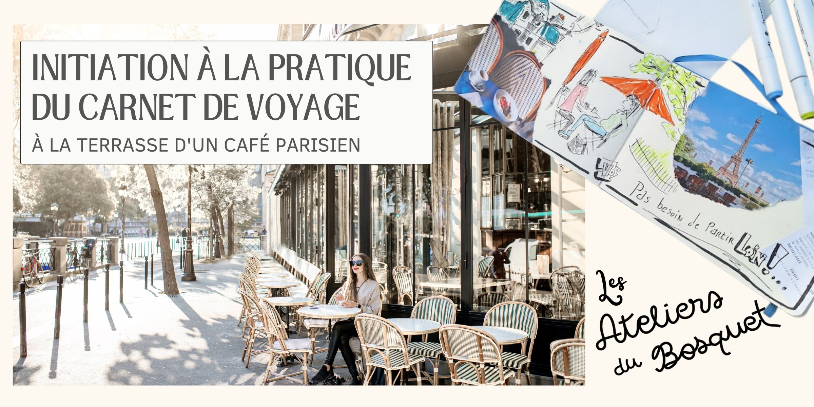

Regarder
Choisir un détail, une lumière, une scène ou une sensation.
Les Carnets du Bosquet
Des ateliers sensibles pour regarder un lieu avec attention, en faire une interprétation personnelle et garder une trace de ses découvertes.


Le concept
Le Carnet Café est un atelier où l’on mêle dessin, mots, couleurs et collage pour observer un lieu, l’interpréter et en construire un récit personnel. Les propositions invitent à regarder, choisir, transformer et composer, chacun avec son propre langage.
Choisir un détail, une lumière, une scène ou une sensation.
Tester quelques traits, couleurs, mots et collages dans son carnet.
Échanger autour des pages et repartir avec une trace personnelle.
Exemple de déroulement
Voici le fil d’une séance type au Café La Promenade.
Le Carnet Café
Un petit groupe, du matériel prêté sur place et des propositions concrètes pour commencer ou retrouver le plaisir du carnet.
Inscription
Écrivez-moi pour recevoir les prochaines dates et les informations pratiques. Le carnet et le matériel créatif sont fournis pendant la séance.
Initiation de 3 heures au Café La Promenade, en petit groupe.
Demander une placePartagez l’expérience avec un proche, un ami ou un collègue.
S’inscrire à deuxPour les collectifs
Une équipe, une association ou une communauté peut aussi se raconter par les images. Les ateliers s’adaptent à votre lieu, votre sujet et votre rythme : carnet de territoire, carnet d’équipe, récit d’un projet ou fresque de traces.
Parler d’un atelier pour votre collectifUn format sur mesure, de quelques heures à un cycle, avec une restitution collective.